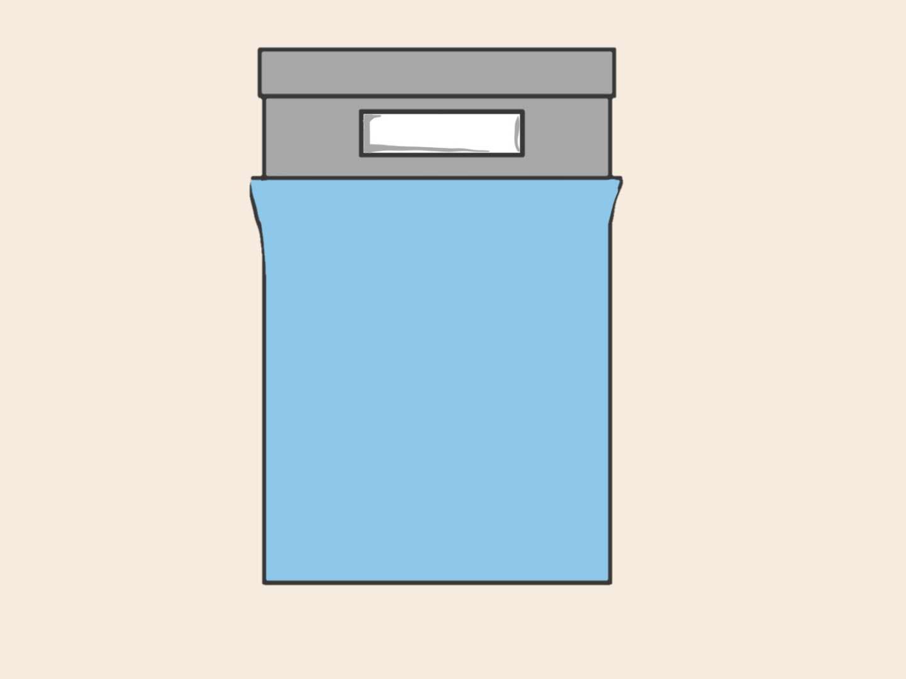

Aha!
How long have I entered bed without any remaining work?
I can't really remember, but for sure it has been a long time.
It feels amazing!!!
Maybe I should consider doing this more frequently in the future!
With relaxing mood, I showered and entered my bed cheerfully, but my day hasn't end here. What's my ending mood for today?